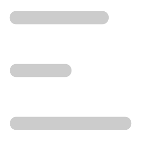

{% if site.navigation_header %}
<header ref="menu" class="flex justify-between">
  <span class="logo fs-400">{{ site.title }}</span>

  <button
    class="mobile-nav-toggle"
    :aria-expanded="menuState"
    artia-controls="primary-navigation"
  >
    
    
    <span class="visually-hidden">Menu</span>
  </button>
  <div class="navigation-wrapper" :data-visible="menuVisibility">
    <nav class="fs-400" id="primary-navigation">
      {% for item in site.navigation_header %} {% if item.url contains '://' %}
      {% assign url = item.url %} {% else %} {% assign url = item.url |
      relative_url %} {% endif %}

      <a class="neutral-link" href="{{ url }}">{{ item.title }}</a>

      {% endfor %}
    </nav>
  </div>
</header>
{% endif %}
